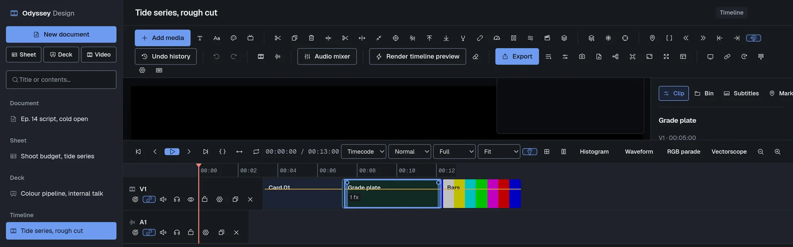
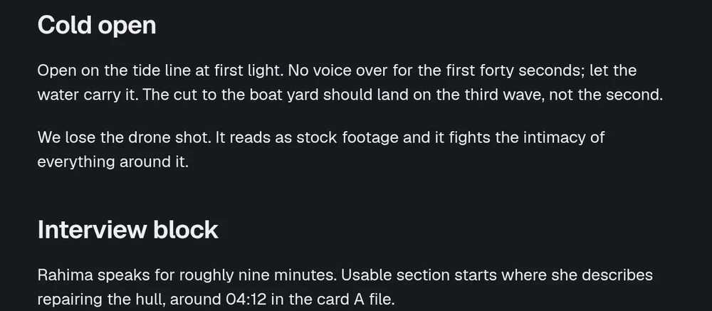
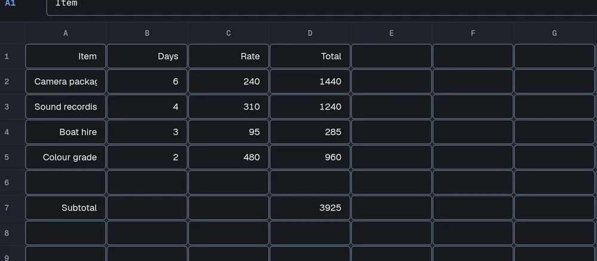
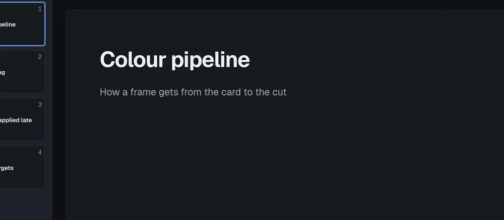

135
Video
Native effects, plus every frei0r plugin installed on your machine. Keyframes on every numeric parameter, with 28 interpolation curves.
Documents, spreadsheets, decks and a real ffmpeg video timeline, in one desktop app that stores everything on your machine.

A document, a spreadsheet, a deck and a video timeline are the same shape of thing from different angles. Adding a module means adding a kind, not a new table.
Native effects, plus every frei0r plugin installed on your machine. Keyframes on every numeric parameter, with 28 interpolation curves.
Rich text with a formatting toolbar, plain-text paste, and live word, character and reading-time counts.

A 26 by 60 grid over a formula engine written in Rust. Twenty functions, real cell references and ranges, and cycles reported as a value instead of a hang.

Filmstrip editing and a presenter mode with its own dark token set, so a deck never inherits the theme of the page behind it.

A multi-track non-linear editor written from scratch against ffmpeg. Every render is an argument vector you can print and read.
There is no account to make and no server to reach. Every item lives in one SQLite file in your user data directory, which you can copy, back up, or open with any other tool that reads SQLite.
Installing, upgrading and removing the application never touch that file. The uninstaller records every path it created and removes exactly those.
items id, kind, title, body, data(JSON),
due, project, timestamps
links src -> dst, rel
embeds and backlinks, both directions
sessions item_id, start, end
editing sessions, the basis for historyOne self-contained file on Linux, or your own package manager. Nothing to compile and no Rust or Node needed to install.
A single .run file carrying a prebuilt binary. It verifies
its own checksum, opens a wizard, checks for the libraries it needs and
offers to fetch any that are missing through your own package manager.
chmod +x OdysseyDesign_0.1.0_Linux.run
./OdysseyDesign_0.1.0_Linux.run
Installing just for you goes to
~/.local/opt/odyssey-design and needs no password.
All users goes to /opt/odyssey-design and
asks for one. On a machine with no desktop session,
--text runs the same wizard in the terminal.
Two AUR packages. odyssey-design-bin unpacks the released
binary. odyssey-design-git builds from the current commit
and needs Rust and Node.
yay -S odyssey-design-bin
paru -S odyssey-design-git
ffmpeg is a hard dependency and carries the renderer. Install
frei0r-plugins as well for the extra effect library, and
gst-libav to play H.264 sources directly in the preview.
Through winget or Scoop, both reading the same signed release artifacts.
winget install Fs1lyric.OdysseyDesign
scoop bucket add odyssey https://github.com/Fs1lyric/scoop-odyssey
scoop install odyssey-design
Not published yet The manifests are in the repository and the release workflow builds the Windows artifacts, but nothing has been submitted to winget or Scoop yet. Until it is, these commands will not resolve.
A Homebrew cask from the project tap, for Apple silicon and Intel.
brew tap fs1lyric/odyssey
brew install --cask odyssey-design
Not published yet The cask is in the repository and the release workflow builds the disk images, but the tap has not been published yet. Until it is, these commands will not resolve.
Requires Rust, Node, webkit2gtk and GTK 3. The video editor also needs ffmpeg and ffprobe on your path.
git clone https://github.com/Fs1lyric/odyssey-design
npm install && npm run tauri dev
The Rust suite includes end-to-end tests that generate real media with
ffmpeg, render actual projects and probe the results. Run them with
cargo test inside src-tauri.
Every file, with checksums, is on the downloads page.
This is a working first version of the editors, not a finished product. The limits below are real and worth knowing before you install.
No accounts, no sharing, no presence and no sync. That is the design, not a gap waiting to be filled.
The canvas compositor draws what it can. Chroma key, vignette, crop, rotate and frei0r appear only in the export. ffmpeg is always the authority on the final output.
Timed commands target a filter by name, so two animated effects of the same kind on one clip receive each other's commands.
The application builds against webkit2gtk and GTK 3, and that is where the test suite runs. Windows and macOS builds exist in the release workflow but have not been through the same use.